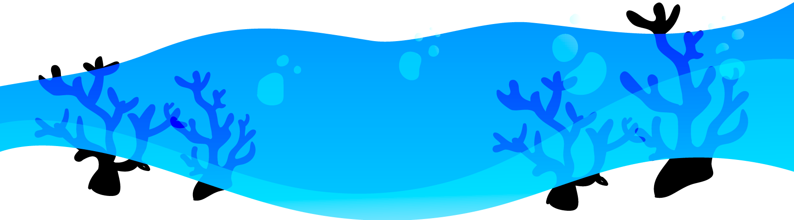

¿Dónde se encuentran?
Los arrecifes se encuentran dentro de una franja que se forma entre el Trópico de Cáncer y el Trópico de Capricornio y generalmente del lado oriental de los continentes.
Los arrecifes son comunidades marinas donde convive una gran diversidad de animales marinos como peces, nudibranquios, caracoles, erizos, estrellas de mar, langostas y corales, así como algas y pastos marinos que son las plantas más comunes en estos ecosistemas.
Los arrecifes sirven como espacios de reproducción de especies, cambian la dirección y velocidad de las corrientes marinas, tienen una estrecha relación con otros ecosistemas
Los arrecifes se encuentran dentro de una franja que se forma entre el Trópico de Cáncer y el Trópico de Capricornio y generalmente del lado oriental de los continentes.
El área estimada que ocupan los arrecifes en el país es de aproximadamente cerca de 1,780 kilómetros cuadrados. Comúnmente, los arrecifes pueden existir desde a unos pocos centímetros de la superficie hasta 50 metros de profundidad.
En la zona del Pacífico los arrecifes son relativamente pequeños y se encuentran geográficamente aislados entre sí.
No se desarrollan en aguas con temperaturas inferiores a los 20 ºC, pero las temperaturas muy elevadas los afectan negativamente y su amplitud térmica ideal es de 20-30 ºC.
En general, en las aguas mexicanas el clima es subtropical a tropical, con una temperatura media anual de 26° a 28°C. Las condiciones para el crecimiento óptimo en los arrecifes de coral son temperatura entre los 22° a 28°C, intensidad luminosa alta y concentración baja de nutrientes.
